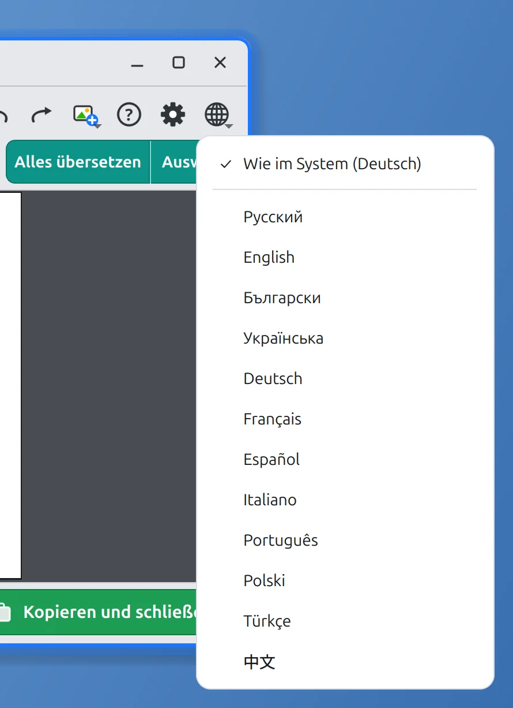
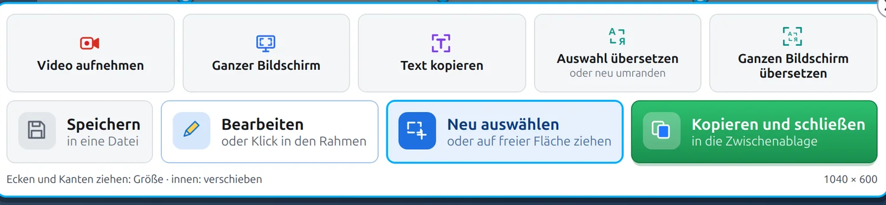
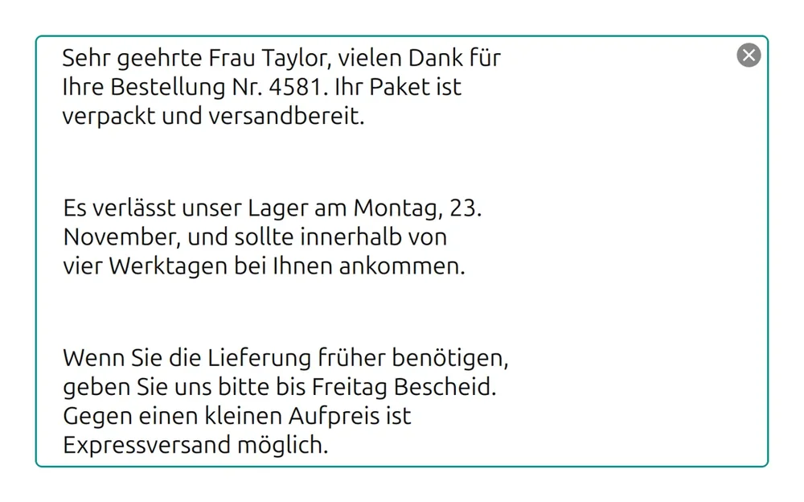
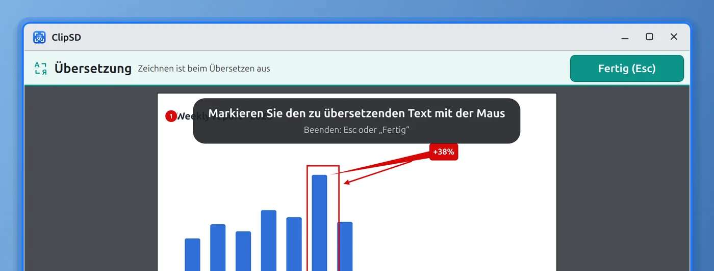
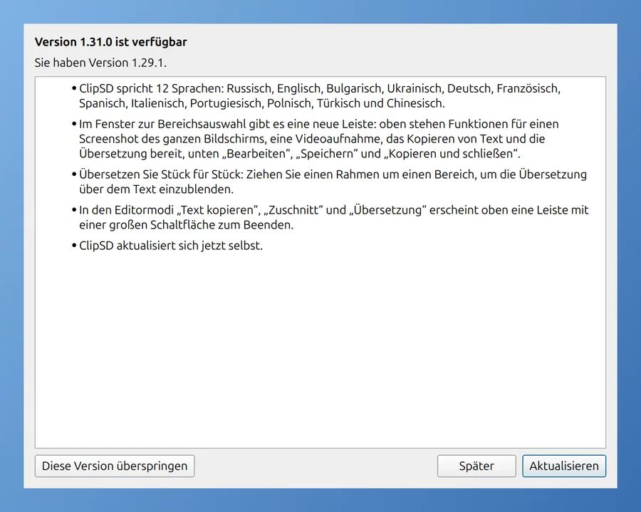

Versionsverlauf
Version 1.31.0
erschienen am
- ClipSD spricht 12 Sprachen: Russisch, Englisch, Bulgarisch, Ukrainisch, Deutsch, Französisch, Spanisch, Italienisch, Portugiesisch, Polnisch, Türkisch und Chinesisch. Die Sprache lässt sich sofort und ohne Neustart wechseln: über das Symbolmenü neben der Uhr, den Globus im Editor, den ersten Schritt der Einführung oder die Einstellungen.

- Im Fenster zur Bereichsauswahl gibt es eine neue Leiste: oben stehen Funktionen für einen Screenshot des ganzen Bildschirms, eine Videoaufnahme, das Kopieren von Text und die Übersetzung bereit, unten „Bearbeiten“, „Speichern“ und „Kopieren und schließen“.

- Übersetzen Sie Stück für Stück: Ziehen Sie einen Rahmen um einen Bereich, um die Übersetzung über dem Text einzublenden. Ziehen Sie anschließend einen Rahmen um den nächsten Bereich, um auch ihn zu übersetzen. Esc beendet den Modus.

- In den Editormodi „Text kopieren“, „Zuschnitt“ und „Übersetzung“ erscheint oben eine Leiste mit einer großen Schaltfläche zum Beenden. Mit Esc kehren Sie zum vorherigen Werkzeug zurück.

- ClipSD aktualisiert sich jetzt selbst. Einmal am Tag prüft es, ob eine neue Version verfügbar ist, und bietet „Aktualisieren“, „Später“ oder „Diese Version überspringen“ an. Um sofort zu prüfen, wählen Sie im Symbolmenü „Nach Updates suchen“. Updates werden anhand einer digitalen Signatur überprüft; startet die neue Version nicht, wird die vorherige wiederhergestellt.
